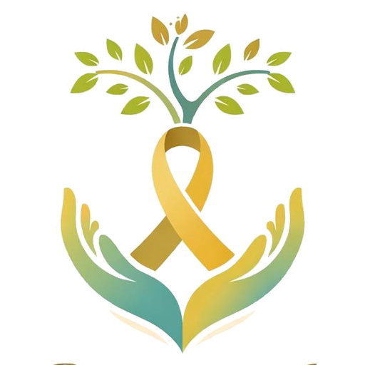

About Us


Our story
Elizabeth Sitawa Cancer C.B.O. is a non-political, voluntary community-based organization registered and operating in Kitale Town, Trans Nzoia County, Kenya. The organization was founded to raise cancer awareness, challenge the stigma that surrounds a cancer diagnosis, advocate for the dignity of people affected by cancer, and mobilize support for individuals and families navigating the realities of the disease.
Our work is rooted in a simple conviction: cancer should not be faced in silence, and the people who face it deserve a community that sees them, supports them, and stands beside them.
Read Our Vision & MissionThe story of Elizabeth Sitawa.
Elizabeth Sitawa Kisiangani did not set out to start an organization. Her story begins like most do, in an ordinary life, until a cancer diagnosis interrupted it and asked something new of her.
What is not in question is what she chose to do with it. Elizabeth did not carry her diagnosis privately. She spoke about it openly, first to her family, then to her community, and eventually publicly, at a time when doing so was neither easy nor common. That decision came from a simple conviction: that the fear and silence surrounding a cancer diagnosis were, in their own way, doing as much harm as the disease itself.
That belief, carried through her own journey, is the reason this organization exists: to make sure the next person diagnosed in Trans Nzoia County is met with information instead of rumour, support instead of isolation, and dignity instead of stigma, a community standing with them, not a silence around them.
In recognition of this work, Elizabeth holds an Honorary Doctor of Humanitarian Service.
Read Elizabeth's Full Story
Why we exist.
Why We Exist
Because people affected by cancer deserve information, dignity, support and hope, and should never have to face a diagnosis in silence.
What We Do
Cancer education and awareness, early-detection awareness, psychosocial support, patient advocacy, community outreach and practical assistance.
Who We Support
Cancer patients, survivors, caregivers, families and the wider community across Trans Nzoia County.
Three principles behind everything we do.
Community-Led
Our work is shaped by the people we serve, not designed at a distance from them. We listen first, and build our programs around what Trans Nzoia County actually needs.
Partnership-Driven
Cancer support is stronger when organizations work together. We partner with local and international organizations that share our commitment to dignity and access.
Locally Rooted
We are based in and accountable to Trans Nzoia County. Our team lives in the community it serves, which shapes how we build trust and show up consistently.
Rooted in Trans Nzoia County.
Elizabeth Sitawa Cancer C.B.O. is headquartered in Kitale Town and serves cancer patients, survivors, caregivers and families across Trans Nzoia County, Kenya. As a locally rooted organization, our team lives in the community it serves, which shapes how we reach people, build trust, and stay accountable to the county we call home.
A compassionate and informed community where no one faces cancer alone and every person affected by cancer has access to hope, dignity, support, and the opportunity to thrive.
The Elizabeth Sitawa Cancer Community Based Organization exists to support cancer patients, survivors, caregivers, and families through education, early-detection awareness, psychosocial support, patient advocacy, community outreach, and strategic partnerships that improve access to care and quality of life.
What guides our work.
We serve with compassion, protect dignity, and work collaboratively to bring hope to every person and family affected by cancer.
Compassion
We listen, support and stand with people through difficult journeys.
Dignity
Every person affected by cancer deserves respect.
Hope
Even in hard seasons, we work to keep a path forward visible.
Integrity
We operate transparently and responsibly.
Equity
Support and advocacy should reach everyone, without discrimination.
Collaboration
We work with communities, partners and institutions together.
Community
Cancer affects families and communities, not only individuals.
Accountability
We hold ourselves responsible for the trust placed in us.
Led by lived experience.
Structured to be trusted with what people give us.
Elizabeth Sitawa Cancer C.B.O. is registered and operates as a non-political, voluntary community-based organization in Trans Nzoia County, Kenya. We are guided by a volunteer leadership team accountable to the community we serve, and we aim to be transparent in how contributions are used.
We welcome questions about how we work. If you would like to know more about our registration, governance, or how a gift is used, reach out; we are glad to talk it through directly.
Ask Us Anything
- Status
- Registered Community Based Organization
- Jurisdiction
- Trans Nzoia County, Kenya
- Leadership
- Volunteer-led, not paid executives
- Affiliation
- Non-political and independent
- Accountability
- Open to community and donor inquiry
Stand with cancer fighters in Trans Nzoia.
Whether you need support, want to give, or want to volunteer your time, there's a way to be part of this.